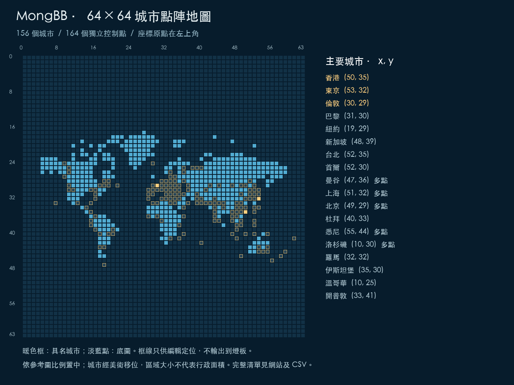

ESP32-WROOM-32 · P2.5 64×64 · 1/32 scan · USB 115200 baud
程式包含 559 個底圖像素、156 個具名城市、164 個互不重疊的城市控制點；其中 8 個城市各佔 2 點。網站亦可新增城市，每個城市最多 8 點、合共最多 256 個城市。

左上角是 (0,0)，x 向右、y 向下，範圍均是 0–63；index = y * 64 + x。原圖約 2:1，等比例縮至中央 64×32（y=16–47），上下保留黑色空間。實體板仍然是 64×64、160×160 mm。
這是按使用者參考圖編排的裝飾地圖。城市經美術移位以分開密集地區；多點只表示一組控制區域，不代表城市面積、行政邊界或精確 GPS 投影。城市可在網站改名、移位或加點。
金色及白色框線只供編輯定位，不傳到燈板。城市編輯器持有自己的模板；若用原始像素工具改圖、載入 A/B 或其他設定，再改城市控制，會重新套用城市模板。
MongBBCityMap 資料夾及裏面的全部檔案，雙擊 MongBBCityMap.ino。https://espressif.github.io/arduino-esp32/package_esp32_index.json。BoardConfig.h 內預設 #define MONG_PANEL_ENABLED 1 改成 0。USB 協定會工作，但 HUB75 不輸出。MONG_PANEL_ENABLED 1。選正確 USB Port，Upload。需用可傳資料的 USB 線；某些板要按住 BOOT 開始上傳，再放開。想燒錄自己編輯的城市：在網站下載「我的城市座標 Cities.h」，覆蓋同名檔後重新 Verify / Upload。它包含名稱、座標、顏色、開關、城市亮度與底圖亮度；呼吸及模擬材料不在這個檔，呼吸用 Serial Monitor 命令或 USB 設定。若板內已有保存圖案，上電會優先還原保存圖案；輸入 defaults 才載入新 Cities.h 預設，再輸入 save 保存。
目前只確認 P2.5、64×64、32S 和 ESP32-WROOM-32。驅動 IC、接口腳序、電源額定值仍未確認。SHIFTREG 是可調假設；FM6126A 等 IC 要用相符設定。僅有 1/32 scan 並不能保證相容。
| HUB75E 訊號 | ESP32 GPIO |
|---|---|
| R1 / G1 / B1 | 25 / 26 / 27 |
| R2 / G2 / B2 | 14 / 32 / 33 |
| A / B / C / D / E | 23 / 19 / 18 / 17 / 16 |
| LAT / OE / CLK | 4 / 21 / 22 |
| GND | ESP32 GND 與燈板電源 GND 共地 |
按訊號名稱接到燈板 IN，不要單靠插頭外觀猜腳位。64×64 1/32 需要 E 線。這是 WROOM 參考腳位，其他模組要重核。
燈板用符合其標示電壓、電流需求的獨立電源；常見 HUB75 板是 5V，但以你的板為準。USB 只連 ESP32，不要經 ESP32 的 3.3V、USB 或細訊號線供應整塊燈板。ESP32 訊號是 3.3V；若燈板要求 5V 邏輯，用合適的 3.3V→5V 緩衝／電平轉換（例如符合要求的 AHCT 方案），不要把 5V 訊號反接入 ESP32。關電後接線。
韌體先限制 MONG_BRIGHTNESS_CAP = 32（0–255 輸出設定）。這不是電流限制、量度亮度或電源保護保證。8-bit PWM 色深、10 MHz 時脈及輸出上限均是可調初始設定；色差、最低可見亮度、刷新與功耗須實物量度。
設定 115200 baud，行尾選 Newline。城市 ID 區分大小寫；例如 HongKong，不是中文名稱。每次輸入一行：
map 0 city HongKong on 160 city Tokyo on 100 city London on 200 city Tokyo off breathe 4 steady save
| 命令 | 作用 |
|---|---|
list / help | 列出全部城市 ID、名稱、座標／幫助 |
city HongKong on 160 | 該城市所有點用 160/255 邏輯亮度開啟 |
city Tokyo off | 回到底圖；map 0 時完全黑色 |
point 50 35 on 180 | 單點；不改城市區域定義 |
map 32 / map 0 | 淡藍底圖／關底圖，按韌體城市表重建 |
breathe 4 | 全圖 4 秒一個呼吸週期，可用 2–30 秒 |
steady / pause / play | 停止呼吸／凍結動畫／繼續動畫 |
off | 整塊 RGB Matrix 關閉，不更改已保存設定 |
defaults | 載入目前 Cities.h 的預設 |
save | 保存目前圖案，下次開機還原 |
程式內亦可呼叫 setCity("HongKong", true, 160); 或 setPoint(50, 35, true, 180);。座標、預設顏色及多點區域在 Cities.h，底圖在 WorldMap.h。
保存需要 LittleFS。程式不會自動格式化既有儲存區；全新板若回覆 storage unavailable，可在確認板內沒有要保留的檔案後，手動輸入 format-storage ERASE，再 save。這會清空此韌體使用的 LittleFS 分區。刷入程式本身亦會覆蓋板上的舊應用程式，請用適合本專案的 ESP32。
USB 傳送目前的像素圖及 RGB 效果，不會改板內編譯的城市名錄；新名稱／區域要同步到 Serial Monitor 的 list，請替換 Cities.h 再燒錄。材料、CCT、曝光、Bloom 是模擬器設定，沒有傳到硬件。螢幕顏色與實物未經色彩或光度校準。
原始碼包含單元測試、真正 C++ 控制核心測試、TypeScript↔C++ 全像素比對、USB 斷線／逾時／取消測試，以及桌面與窄屏瀏覽器驗收腳本。兩個 ESP32 設定已用固定版本 Arduino 框架編譯。
未連接你的實物 ESP32 或燈板；未驗證真實驅動 IC、接線、顏色、亮度、耗電或刷新。 若畫面錯行、倒置或黑屏，先核對 IN／E 線／腳位／驅動 IC 與電源，勿靠加亮度解決。
同一列多個座標會一起開關。CSV 另附 index 與地區分類；shift 欄只表示在美術對位後為避開重疊而移動的格數，不是總地理誤差。
| # | 城市 | 程式 ID | (x, y) |
|---|---|---|---|
| 1 | 香港 | HongKong | (50, 35) |
| 2 | 東京 | Tokyo | (53, 32) |
| 3 | 倫敦 | London | (30, 29) |
| 4 | 紐約 | NewYork | (19, 29) |
| 5 | 巴黎 | Paris | (31, 30) |
| 6 | 上海 | Shanghai | (51, 32)、(50, 32) |
| 7 | 北京 | Beijing | (49, 29)、(50, 29) |
| 8 | 新加坡 | Singapore | (48, 39) |
| 9 | 台北 | Taipei | (52, 35) |
| 10 | 首爾 | Seoul | (52, 30) |
| 11 | 曼谷 | Bangkok | (47, 36)、(48, 36) |
| 12 | 杜拜 | Dubai | (40, 33) |
| 13 | 悉尼 | Sydney | (55, 44)、(54, 44) |
| 14 | 洛杉磯 | LosAngeles | (10, 30)、(11, 30) |
| 15 | 澳門 | Macau | (50, 34) |
| 16 | 深圳 | Shenzhen | (49, 35) |
| 17 | 廣州 | Guangzhou | (49, 34) |
| 18 | 成都 | Chengdu | (48, 33) |
| 19 | 重慶 | Chongqing | (49, 33) |
| 20 | 西安 | Xian | (49, 31) |
| 21 | 杭州 | Hangzhou | (51, 31) |
| 22 | 昆明 | Kunming | (48, 34) |
| 23 | 拉薩 | Lhasa | (45, 33) |
| 24 | 哈爾濱 | Harbin | (51, 28) |
| 25 | 烏魯木齊 | Urumqi | (44, 29) |
| 26 | 高雄 | Kaohsiung | (52, 34) |
| 27 | 大阪 | Osaka | (53, 31) |
| 28 | 京都 | Kyoto | (52, 31) |
| 29 | 札幌 | Sapporo | (52, 29) |
| 30 | 福岡 | Fukuoka | (51, 30) |
| 31 | 那霸 | Naha | (53, 34) |
| 32 | 釜山 | Busan | (52, 32) |
| 33 | 濟州 | Jeju | (53, 30) |
| 34 | 河內 | Hanoi | (48, 35) |
| 35 | 胡志明市 | HoChiMinh | (48, 38) |
| 36 | 峴港 | DaNang | (49, 37) |
| 37 | 清邁 | ChiangMai | (47, 35) |
| 38 | 布吉 | Phuket | (47, 37) |
| 39 | 吉隆坡 | KualaLumpur | (49, 38) |
| 40 | 檳城 | Penang | (47, 40) |
| 41 | 雅加達 | Jakarta | (48, 41) |
| 42 | 登巴薩（峇里島） | Denpasar | (50, 40) |
| 43 | 馬尼拉 | Manila | (52, 37) |
| 44 | 宿霧 | Cebu | (52, 38) |
| 45 | 德里 | Delhi | (43, 33)、(42, 33) |
| 46 | 孟買 | Mumbai | (43, 35) |
| 47 | 齋浦爾 | Jaipur | (43, 34) |
| 48 | 阿格拉 | Agra | (43, 32) |
| 49 | 班加羅爾 | Bengaluru | (43, 36) |
| 50 | 加德滿都 | Kathmandu | (44, 33) |
| 51 | 科倫坡 | Colombo | (44, 37) |
| 52 | 馬累 | Male | (43, 37) |
| 53 | 達卡 | Dhaka | (45, 34) |
| 54 | 卡拉奇 | Karachi | (41, 33) |
| 55 | 塔什干 | Tashkent | (41, 30) |
| 56 | 阿拉木圖 | Almaty | (42, 29) |
| 57 | 烏蘭巴托 | Ulaanbaatar | (47, 29) |
| 58 | 阿布扎比 | AbuDhabi | (39, 32) |
| 59 | 多哈 | Doha | (39, 33) |
| 60 | 馬斯喀特 | Muscat | (40, 32) |
| 61 | 利雅得 | Riyadh | (37, 33) |
| 62 | 吉達 | Jeddah | (36, 34) |
| 63 | 伊斯坦堡 | Istanbul | (35, 30) |
| 64 | 安塔利亞 | Antalya | (34, 31) |
| 65 | 安曼 | Amman | (34, 32) |
| 66 | 耶路撒冷 | Jerusalem | (33, 32) |
| 67 | 德黑蘭 | Tehran | (39, 31) |
| 68 | 第比利斯 | Tbilisi | (37, 30) |
| 69 | 愛丁堡 | Edinburgh | (31, 28) |
| 70 | 都柏林 | Dublin | (29, 30) |
| 71 | 曼徹斯特 | Manchester | (29, 29) |
| 72 | 阿姆斯特丹 | Amsterdam | (31, 29) |
| 73 | 布魯塞爾 | Brussels | (30, 30) |
| 74 | 柏林 | Berlin | (34, 28) |
| 75 | 慕尼黑 | Munich | (33, 30) |
| 76 | 法蘭克福 | Frankfurt | (34, 27) |
| 77 | 布拉格 | Prague | (35, 29) |
| 78 | 維也納 | Vienna | (34, 30) |
| 79 | 布達佩斯 | Budapest | (33, 31) |
| 80 | 華沙 | Warsaw | (36, 28) |
| 81 | 蘇黎世 | Zurich | (32, 30) |
| 82 | 日內瓦 | Geneva | (32, 29) |
| 83 | 羅馬 | Rome | (32, 32) |
| 84 | 米蘭 | Milan | (33, 29) |
| 85 | 威尼斯 | Venice | (34, 29) |
| 86 | 佛羅倫斯 | Florence | (32, 31) |
| 87 | 巴塞隆拿 | Barcelona | (31, 32) |
| 88 | 馬德里 | Madrid | (29, 31) |
| 89 | 西維爾 | Seville | (29, 33) |
| 90 | 里斯本 | Lisbon | (28, 31) |
| 91 | 波圖 | Porto | (28, 30) |
| 92 | 尼斯 | Nice | (33, 28) |
| 93 | 雅典 | Athens | (35, 31) |
| 94 | 聖托里尼 | Santorini | (35, 32) |
| 95 | 哥本哈根 | Copenhagen | (32, 28) |
| 96 | 斯德哥爾摩 | Stockholm | (33, 26) |
| 97 | 奧斯陸 | Oslo | (33, 27) |
| 98 | 赫爾辛基 | Helsinki | (36, 26) |
| 99 | 雷克雅未克 | Reykjavik | (29, 24) |
| 100 | 塔林 | Tallinn | (36, 25) |
| 101 | 杜布羅夫尼克 | Dubrovnik | (36, 31) |
| 102 | 布加勒斯特 | Bucharest | (37, 29) |
| 103 | 莫斯科 | Moscow | (39, 25)、(40, 25) |
| 104 | 聖彼得堡 | StPetersburg | (38, 25) |
| 105 | 開羅 | Cairo | (34, 33) |
| 106 | 馬拉喀什 | Marrakech | (30, 33) |
| 107 | 卡薩布蘭卡 | Casablanca | (28, 32) |
| 108 | 突尼斯 | Tunis | (33, 33) |
| 109 | 達喀爾 | Dakar | (28, 36) |
| 110 | 阿克拉 | Accra | (30, 36) |
| 111 | 拉各斯 | Lagos | (31, 37) |
| 112 | 亞的斯亞貝巴 | AddisAbaba | (36, 36) |
| 113 | 內羅畢 | Nairobi | (35, 38) |
| 114 | 桑給巴爾 | Zanzibar | (36, 40) |
| 115 | 開普敦 | CapeTown | (33, 41) |
| 116 | 約翰內斯堡 | Johannesburg | (35, 41) |
| 117 | 路易港（毛里裘斯） | PortLouis | (40, 42) |
| 118 | 多倫多 | Toronto | (18, 28) |
| 119 | 蒙特利爾 | Montreal | (19, 28) |
| 120 | 溫哥華 | Vancouver | (10, 25) |
| 121 | 西雅圖 | Seattle | (10, 26) |
| 122 | 三藩市 | SanFrancisco | (9, 27) |
| 123 | 拉斯維加斯 | LasVegas | (10, 29) |
| 124 | 芝加哥 | Chicago | (17, 29) |
| 125 | 波士頓 | Boston | (21, 29) |
| 126 | 華盛頓 | WashingtonDC | (18, 29) |
| 127 | 邁阿密 | Miami | (16, 31) |
| 128 | 奧蘭多 | Orlando | (16, 30) |
| 129 | 新奧爾良 | NewOrleans | (15, 30) |
| 130 | 安克雷奇 | Anchorage | (9, 24) |
| 131 | 檀香山 | Honolulu | (7, 33) |
| 132 | 墨西哥城 | MexicoCity | (12, 33) |
| 133 | 坎昆 | Cancun | (15, 33) |
| 134 | 哈瓦那 | Havana | (16, 32) |
| 135 | 聖荷西（哥斯達黎加） | SanJose | (14, 34) |
| 136 | 巴拿馬城 | PanamaCity | (15, 35) |
| 137 | 波哥大 | Bogota | (16, 36) |
| 138 | 基多 | Quito | (15, 37) |
| 139 | 利馬 | Lima | (15, 38) |
| 140 | 庫斯科 | Cusco | (16, 39) |
| 141 | 拉巴斯 | LaPaz | (17, 40) |
| 142 | 聖地亞哥 | Santiago | (17, 43) |
| 143 | 布宜諾斯艾利斯 | BuenosAires | (18, 43) |
| 144 | 聖保羅 | SaoPaulo | (20, 40)、(19, 40) |
| 145 | 里約熱內盧 | RioDeJaneiro | (20, 39) |
| 146 | 烏斯懷亞 | Ushuaia | (18, 47) |
| 147 | 墨爾本 | Melbourne | (53, 44) |
| 148 | 布里斯本 | Brisbane | (55, 43) |
| 149 | 開恩茲 | Cairns | (55, 40) |
| 150 | 珀斯 | Perth | (49, 45) |
| 151 | 阿德萊德 | Adelaide | (53, 43) |
| 152 | 達爾文 | Darwin | (52, 40) |
| 153 | 奧克蘭 | Auckland | (59, 44) |
| 154 | 威靈頓 | Wellington | (58, 45) |
| 155 | 皇后鎮 | Queenstown | (56, 46) |
| 156 | 蘇瓦（斐濟） | Suva | (61, 41) |
Espressif Arduino 安裝 · HUB75 DMA 支援與接線 · Chrome Web Serial · ArduinoJson 7 安裝
MongBB · 2026-10-19 · 城市名錄與座標由同一份程式資料產生。